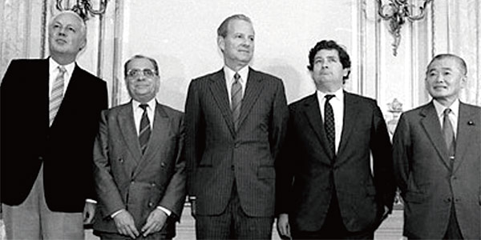

플라자 합의

플라자 합의란 1985년에 G5 재무장관들이 뉴욕 플라자 호텔에 모여 달러화에 대한 엔화/마르크화 가치를 올리기로 한 것을 의미한다.
이로 인해 엔화가치가 2배 이상 증가하였으며(달러당 259엔 > 121엔), 이에 놀란 일본은 금리를 2%나 낮췄다.
미국은 이를 통해 무역적자를 해소하려고 했으나 그렇지 않았기에 루브르 합의를 또 하게 된다.
루브르 합의
루브르 합의란, 미국의 대(對)일본 무역적자가 해소되지 않자 이를 해소하기 위해 G7 회담에서 정리한 합의이다.
쉽게 말해, 미국이 일본에게 "내수시장을 키워서 미국 제품을 많이 살 것"을 요청한 것으로,
이후 일본은 금리를 0.5%p 더 낮추게 되면서 저금리, 저유가, 저물가(수입 물품이 싸지므로)가 된다.
이는 엄청난 구매력의 향상과 투기 수요의 폭발적 증가를 불러온다.